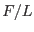

XMM-Newton Science Analysis System
rgsrmfgen (rgsrmfgen-1.15.6) [xmmsas_20170112_1337-16.0.0]
Input Files
- The event list. Must contain the EVENTS table and at
least one exposure map extension, as produced by rgsfilter.
- The source description list. Must contain the SOURCES
table and all applicable selection region extensions, as produced
by rgsregions.
- Optional, a spectrum file. Must be of type NET or TOTAL, as
produced by rgsspectrum.
- Optional, an angular distribution. Format: three-column ASCII,
all values in floating-point representation. Non-conforming
lines are discarded without error or warning. Each line
describes a bin: starting angle, ending angle, bin value. The
lines should be sorted in ascending order of the angles
(otherwise the behavior is undefined). The angles are the
dispersion off-axis coordinate in arc minutes, relative to the
target source of the response matrix. This coordinate is
similar to the DELTA_DISP column of the
SOURCES table, except that DELTA_DISP
includes the instrument-dependent  factor. This
coordinate is also similar to the instrument-independent CAL
, but follows the opposite sign convention. The
author apologizes, and hopes that the benefits of this
coordinate system justify the confusion it is bound to cause.
Truncate the distribution at a reasonable width to avoid
slowing the computation.
XMM-Newton SOC/SSC -- 2017-01-12